AI–GX：从热流代理到仿星器温度优化
AI-Accelerated Gyrokinetic Predictions of Turbulent Transport for Stellarator Design Optimization and Experimental Planning
重点：目标函数的物理意义、DESC–GX–T3D 的连接方式，以及自动优化为什么会产生虚假的最优解。
覆盖：23 页 PDF，12 幅原图，1 张表，附录 A/B。页码均指 PDF 页码（与该文件印刷页码一致）。代码与数据未获得。
1. 论文回答了什么，结论止于哪里
核心贡献是把已有的 GX 神经网络代理接入 DESC 平衡优化和 T3D 输运求解，让优化目标从单根磁力线、单一梯度的热流，扩展到径向分布与临界梯度。它并未训练出涵盖完整反应堆物理的新模型；采用的是此前工作的静电、绝热电子、局域磁通管 ITG 数据与 CNN 集成。（§1–3，PDF 2–10 页）
文章最值得保留的逻辑是三步：固定梯度热流下降并不保证温度上升；提高临界梯度更接近刚性输运下的温度目标；但优化器会主动寻找代理模型的薄弱区，因此“最高代理分数”必须经过几何可行性与高保真验证。最终有效构型在设定的输运测试中提高了中心离子温度，不能据此认定实现了同等幅度的实验性能或聚变功率提升。（§3.1.3–3.2）
| 结果 | 原文证据 | 应如何理解 |
|---|---|---|
| 单磁通管优化约 72 倍加速 | PDF 6 页：单 A100 少于 10 分钟，对比先前约 12 小时 | 不同优化流程的量级比较；不是本文严密同配置计时消融 |
| 临界梯度提高 35–70% | PDF 10–11 页、图 6 | 特定初始 QA 构型与固定密度梯度下，含优化后非线性 GX 检验 |
| 有效候选温度改善中位数约 20%，最佳约 44% | PDF 15–16 页、图 11 | 受固定电子温度、密度与平衡等条件限制；有效候选总体数未在该处给出 |
| 输运求解 45 倍墙钟、720 倍 GPU 时加速 | PDF 17–18 页、图 12 | 3 小时 × 16 GPU 对比 4 分钟 × 1 GPU；两种倍率分母不同 |
2. 为什么不能只优化一个热流数值
优化仿星器边界需要同时兼顾准对称性、新经典输运、湍流与几何可实现性。传统快速几何代理牺牲了对非线性饱和的描述；直接在线调用非线性回旋动理学则限制了每步能采样的磁面与磁力线。作者在 §2.2 回顾了几何代理、线性 GS2 加准线性闭合、直接 GX 优化等路线，其比较依据为被引论文，并非本文重新开展的统一基准。（PDF 5–6 页）
必须区分：热流是在给定几何和梯度下的响应；刚性是超过阈值后响应曲线的陡峭程度；临界梯度是本文以归一化热流达到指定阈值定义的操作量，不等同于线性稳定性边界。径向坐标采用 ，其中 是归一化环向磁通， 是磁力线标签， 和 为无量纲驱动梯度。热流以 表示。本文未给出完整 gyro-Bohm 单位换算约定，复现时必须与 GX 接口一致。
3. 从 GX 数据到可微代理：完整计算链
数据生成。GX 演化局域 分布，空间垂直方向用 Fourier 基，平行速度用 Hermite 基，磁矩方向用 Laguerre 基，并保留带状流。本文仅使用静电、绝热电子设置；动理学电子、电磁效应及全局径向耦合均不包含在训练物理中。（§2.1.1，PDF 3–4 页）
训练集来自约 23,500 个 QA、QH 和随机边界平衡，含部分优化构型。每个平衡选四个磁通管，径向位置随机，磁力线标签取 。每管配两组梯度：固定组 ，随机温度梯度组 ，其中 并施加下限 。本论文没有完整列出随机密度梯度的生成规则，不能补猜。数据总量表述为超过 20 万例；不能用近似构型数乘采样数反推精确训练样本总数。（§2.1.2）
网格为 ，演化到 ，忽略前 150 的瞬态后平均热流。固定磁通管长度和周期边界使网络输入尺寸一致；与其他平行边界处理的等价性不能默认成立。
输入与输出。沿场线的七个磁几何函数排列为 数组，再加两个梯度标量，输出一个时间平均离子热流。七个量为：
其中 为径向与副法向局域坐标， 为磁力线曲率。网格的 96 与网络采样的 97 是原文分别报告的尺寸；实际插值、端点和归一化需要代码确认。图 10 使用 GX 的处理后变量名，不能把它们未经变换当成以上原始几何量。（PDF 4、15 页）
CNN 集成。一维周期卷积沿场线提取局部组合，典型卷积核约 20，层间最大池化约缩小两倍，末端全局平均池化。DeepHyper 搜索超参数，保留最优 100 个模型组成集成；随机 80:20 划分训练与验证，目标热流截底到 。引述前作验证集 ，但这不保证对优化产生的新几何、阈值附近梯度或网络导数同样准确。本文没有给出按平衡分组划分的证明，也没有导数误差或不确定度校准结果。（PDF 4–5 页）
图 1 · 学到的是饱和平均量，不是整段湍流动力学
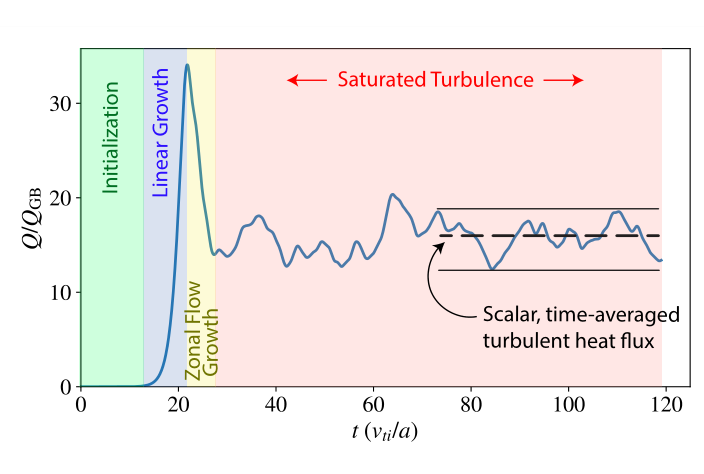
横轴为归一化时间，纵轴为归一化能量通量；依次标出初始化、线性增长、带状流增长和饱和湍流。虚线代表尾段平均值。这是示意图，不是某一次 GX 输出，不能从峰值或时间位置读取实际训练集统计。图解释了为何可将快湍流压缩成供慢输运求解器使用的标量，但没有证明所有构型均能在统一时间窗达到收敛。（§2.1.1）
4. DESC 内层优化：从单点到临界梯度
所有例子从放大到反应堆尺度的 Landreman–Paul 精确 QA 平衡起步。优化改变边界 Fourier 系数；DESC 重新求解 的力平衡，得到 Fourier–Zernike 表示 。压力、电流剖面与环向磁通固定，旋转变换 可变化；这里的谱系数 与目标权重 含义不同。（§3.1，PDF 6 页）
原文式 (1) 的单磁通管目标：
三项分别惩罚准对称误差、该磁通管离子热流、纵横比偏离；固定 。原文给 QA 两项准对称量 ，其中 与磁面外极向电流相关。该简写没有充分说明残差如何离散、取范数与加权，不能直接据此重建 DESC 实现，也不应把平均抵消解释为误差为零。
式 (2) 把热流项换成 。这一步增加径向采样，仍只优化中平面磁力线。事后按式 (3) 对八条磁力线平均：
简单求和成立的前提是该 GX 输出已经完成含场线坐标 Jacobian 的平行积分。不能将任意局域热流样本直接代入这一公式。（PDF 7 页）
图 2 · 单管优化在固定梯度下确实降低热流
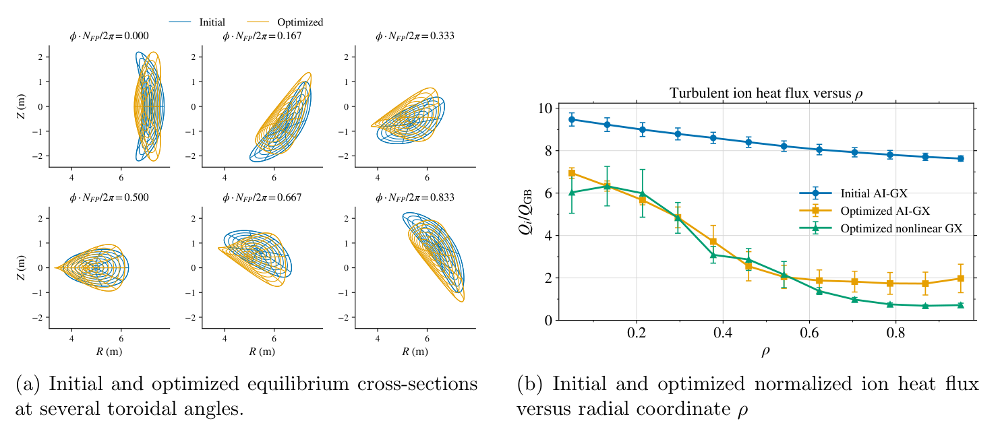
左侧六个截面比较不同环向角的初始与优化磁面，坐标 单位米；右侧比较随 变化的 。蓝线为初始 AI，橙线为优化后 AI，绿线为优化后非线性 GX。优化点在 ，即 ，不能误写为半径 0.5。作者报告热流降低约 25–50%，但该概括并不能替代各半径和各评价方式的实际变化；图中部分区域可见更大的局部降幅。
它支持固定梯度下的方向性改善，不证明温度提高。有效螺旋波纹由 增到 ：上端为 2.4%，所以原文与 W7-X 约 1% 设计点的比较应理解为量级参照，不能说全部低于 1%。误差棒的统计定义在本图注中未明确。（PDF 6–7 页）
图 3 · 径向优化和场线泛化是两件事
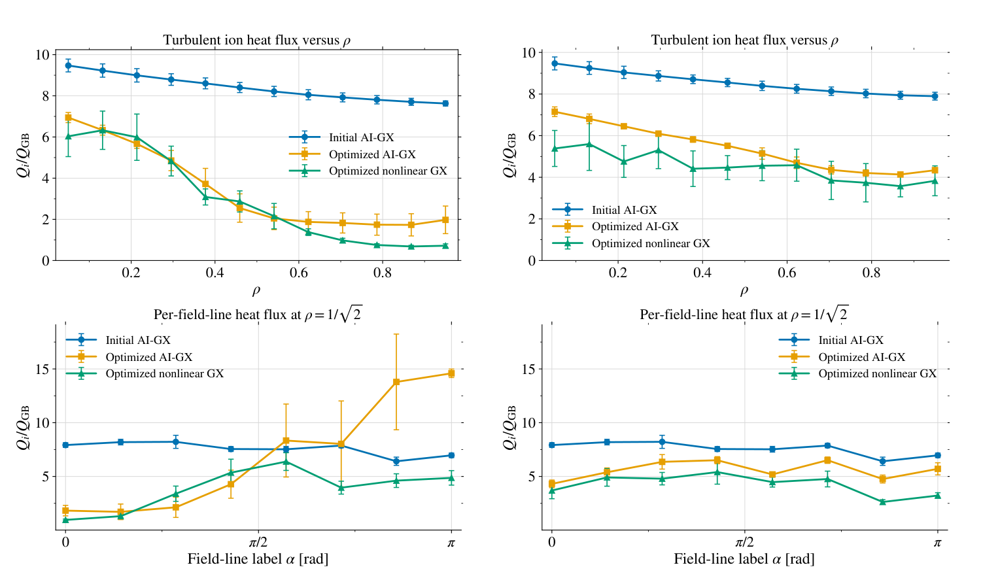
左列为单管优化，右列为多径向位置优化；上排横轴 ，下排是在 上扫描 ，单位 rad。所有纵轴都是归一化热流。左上橙线降得更低，但左下在远离优化场线处反而升高，且与绿色 GX 明显偏离；右列下降较温和、场线变化更均匀。四个面板一起说明只看 会误判优势，也暴露代理对未优化场线的偏差。它没有给出所有磁面的全场线高保真验证。（PDF 8 页）
图 4 · 磁面平均改变了对两个方案的判断
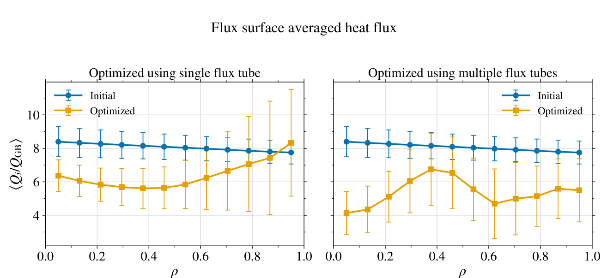
左右分别为单管和多管方案；横轴 ，纵轴 ，比较八条场线后处理平均。多管方案整体更有利，而单管方案边缘收益变小。不要把误差棒直接称作置信区间：图注未交代其统计定义。此图支持提高评价覆盖范围，不代表已经获得收敛的全磁面积分或完整输运改善。（式 3、PDF 7–8 页）
图 5 · 真正想移动的是阈值
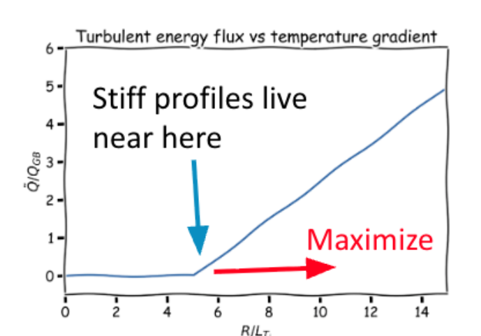
示意曲线横轴实际标的是 ，正文优化扫描用 ，二者长度归一化不同，不可直接比较数值。纵轴为归一化湍流能量通量。蓝箭头指向刚性剖面通常停留的阈值附近，红箭头表示希望将阈值向更大梯度移动。固定梯度降热流可能仅降低超阈值斜率，并不显著移动阈值。此图为机制说明，不是拟合或独立实验。（PDF 9 页）
5. 临界梯度目标到底在最小化什么
原文式 (4)–(6) 并不直接对“第一次跨越阈值的位置”求导，而是对一组梯度上的超阈值热流施加平滑惩罚。为便于阅读，以下以 表示原文平滑宽度：
示例取 ，固定 ，九个径向位置、单条 场线、八个 ，合计每步 72 次代理评价。低梯度权重更大，最大扫描梯度权重为零；最小化此量鼓励低梯度处保持低热流。读者判断：它仍可能通过降低刚性获得较低目标，不能视为严格等价的临界梯度最大化。softplus 平滑了阈值罚函数，但内部的硬 在截底点仍有折点；可用自动微分不等于处处光滑。
曲率项避免边界尖锐，GoodCoordinates 抑制坐标奇异和自交。它们没有构成所有嵌套磁面与线圈可实现性的充分保证。使用 proximal-lsq-exact，三种收敛容差均为 ，最多 1000 步，单次约 10 分钟。（PDF 9–10 页）
图 6 · 较温和几何变化对应阈值上移
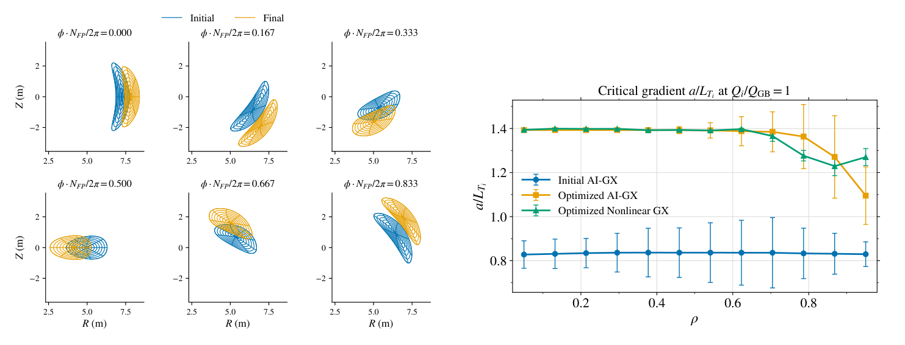
左侧六个截面显示边界较光滑、整体向外移动；右侧显示以 定义的临界 。初始蓝线低于两条优化后曲线，绿线是非线性 GX 复核，作者报告增加 35–70%。外侧的 AI 与 GX 差异提醒读者增益不是每个半径完全一致。作者将形状变化关联到磁轴挠率增加，但没有独立消融证明挠率是唯一因果变量，也没有展示对应线圈设计。（PDF 10–11 页）
6. 外层自动搜索：算法成果与失败链条
内层是可微的 DESC 优化，外层是每次完整运行后评分的遗传算法。Codex 主要搭建并调度外层搜索；这不等于每一代都由语言模型直接提出全新物理策略。作者明确说曾试过不固定遗传算法的推理式探索，但容易陷于小修改，留待以后研究。（§3.1.4，PDF 11 页）
式 (8) 的运行后评分为：
这里 表示一次候选运行， 为采样位置的平均临界梯度，， 为运行时间。分数越低越好；未完成 Fourier continuation 罚 （文中称未发生），直接失败罚 。图 7 画的却是越高越好的临界梯度，不应混同总评分。
每代 16 候选，四张 GPU 并行，保留四个精英；交叉概率 0.35，随后最多重采样四个参数。52 代共 758 完成、40 失败、29 跳过、5 未完成，合计 832 个位置，与 一致；约 72 小时跨日运行于四张 A100 的节点。附录 A 的提示词只作为研究过程记录，本报告没有执行其中任何命令。（PDF 12–13、22 页）
图 7 · 搜索曲线并不能单独证明成功
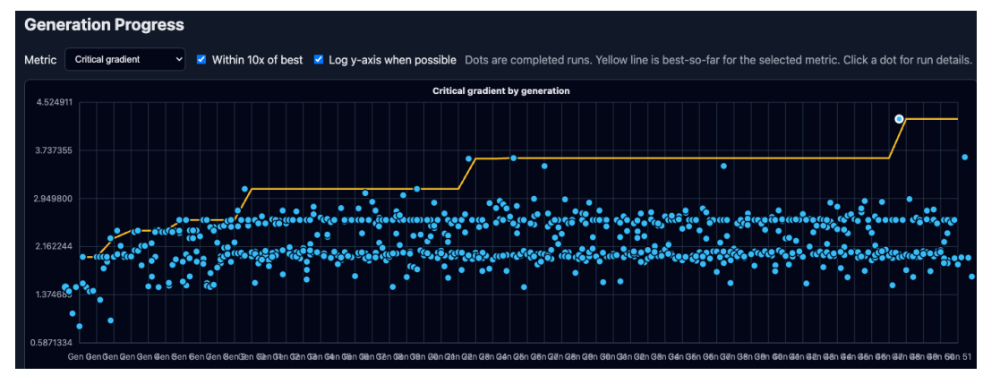
横轴为遗传算法代数，纵轴为平均临界梯度；点为完成候选，黄色轨迹表示迄今最好值，白圈标出后期突出候选。图为原文仪表盘截图，细小文字受原始分辨率限制；本报告保留原图，不从点的位置读取伪精确数值。曲线上升说明代理评价被优化，但该白圈候选后来未通过物理可行性检查。没有等预算随机搜索、贝叶斯优化或人工调参对照，因此不能证明语言模型或遗传算法本身带来了多少额外收益。（PDF 12–13 页）
图 8 · 异常高阈值是风险信号
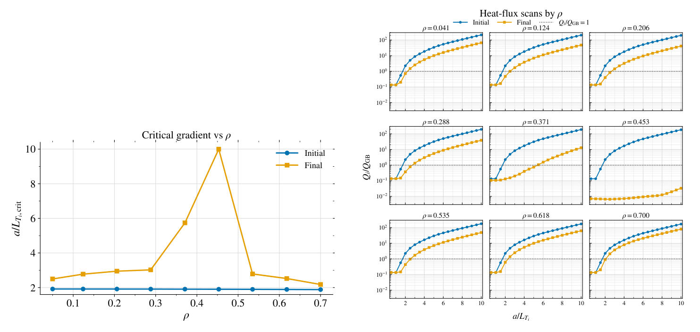
左图为随 变化的临界梯度，右侧九个面板分别扫描对应半径的 ，纵轴归一化热流用对数尺度。初始蓝线与优化后橙线对比，虚线阈值为 1。 两处异常，尤其后者直到扫描上限 10 仍未明显跨阈值。
正文把两个位置都概括为全扫描低热流，但图中 0.371 面板仍有上升并可跨阈值的迹象，不能照抄成两条完全平坦曲线。对于未跨阈值的面板，只能得出扫描区间内未观测到交点，不能把端点当作已测得的真实临界梯度。图支持启动诊断，单独不能判定 OOD 的原因。（PDF 13 页）
图 9 · 集成分歧暴露单个平均值隐藏的问题
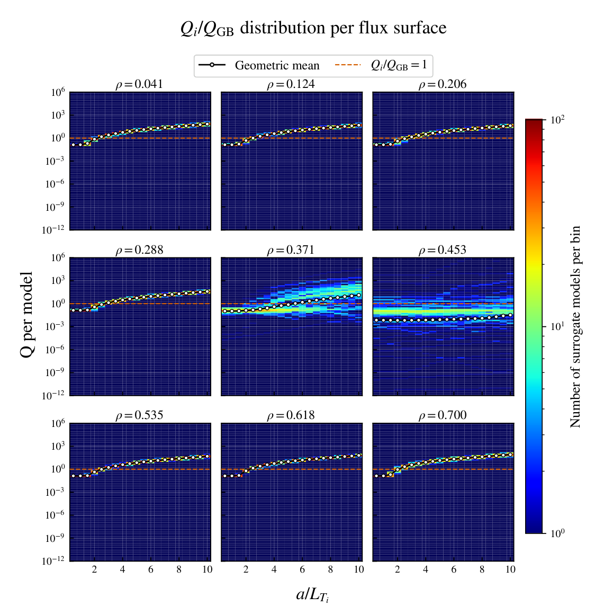
九个面板按径向位置排列；横轴温度梯度，纵轴为每个网络的归一化热流（对数轴），颜色代表每个二维 bin 内的网络数量，白/黑标记为几何平均，橙色虚线为阈值。两处中径位置形成宽阔预测带，其他七处相对集中。这里反映的是不同模型预测的分歧，不是 100 次独立 GX 试验，也不是经过校准的物理置信区间。几何平均对跨数量级分布尤其敏感；应同时保存分位数和跨阈值概率，而不是只看一条均值线。（PDF 14 页；最后一句为报告建议）
图 10 · 异常来自输入几何，且平衡本身不合格
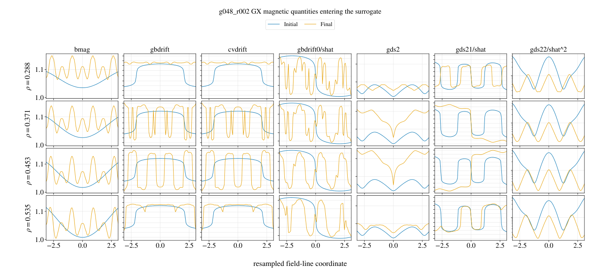
四行对应 ，中间两行是问题磁面；七列依次为 bmag、gbdrift、cvdrift、gbdrift0/shat、gds2、gds21/shat、gds22/shat²。它们对应场强、漂移与度规的 GX 输入表示，横轴为重采样场线坐标。各列尺度与归一化不同，原图多数没有完整数值纵轴，不宜跨列比较幅值。
初始蓝线与最终橙线差异明显，问题位置的 gds2（与 相关）尤其突出；作者进一步检查发现未通过 DESC 嵌套磁面检验。这提供了比“网络很不确定”更直接的拒绝依据。文中将 OOD 列为最可能原因，没有给训练分布距离或因果消融。由于失败候选未在评分中被拒绝，其后代也被错误分数引导。（PDF 13、15 页）
7. 用 T3D 检查最终关心的温度
T3D 采用 TRINITY 的快慢尺度分离：快尺度 GX 提供时间平均通量，慢尺度输运方程迭代更新剖面。原文式 (9) 为：
为物种密度、压力、温度； 为微分体积， 为粒子与热通量，尖括号为磁面平均、上横线为额外平均； 表示能量转移项， 为物种间能量交换频率， 为源项。原文公式把频率写为 ，随后文字使用 ，应理解为同一能量交换频率记号，复现时查接口定义。（PDF 16 页）
本次实际求解比上述通用方程窄。只演化 ，固定密度、电子温度与磁平衡，不含新经典径向输运；没有外加加热源，热电子通过碰撞加热离子。初始中心 ，边缘 ，边缘密度 。由于电子温度被固定，这不是封闭系统的完整电子能量演化，不能据此提出自洽实验加热方案。（§3.2）
九个径向点，每面只取 。验证 GX 分辨率 ，与训练的平行和 Hermite 分辨率不同。图 4 的八场线后处理不能误套成这里做了八场线输运。新经典输运缺席还意味着图 2 波纹上升的真实代价没有被计入此温度目标。（PDF 16–17 页）
图 11 · 合格候选的温度提升，分母必须看清
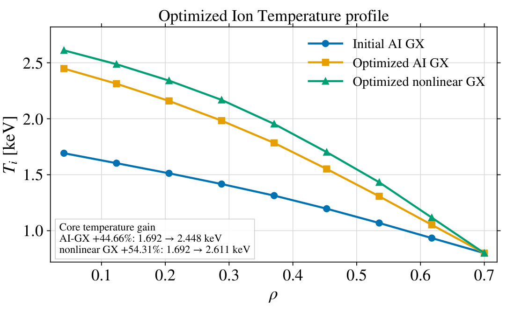
横轴 ，纵轴 （keV）。蓝色初始 AI 曲线中心标注 1.692，橙色优化 AI 为 2.448，绿色优化非线性 GX 为 2.611。图直接标注 AI 提升 44.66%、GX 提升 54.31%；均以同一个 1.692 的初始 AI 值作分母，而图中没有“初始平衡非线性 GX”曲线。
所以 54.31% 不能称作两端都由 GX 验证的纯 GX 增益；它支持优化构型用非线性 GX 仍得到较高温度。AI 与 GX 的优化后中心温度相差约 0.163 keV，是根据图中标注相减，不是读曲线估数。正文所说最佳约 44% 与图中 AI 值一致。更严谨的对照应补跑初始平衡的同配置 GX 输运。（PDF 15–16 页）
图 12 · 稳态接近，不等于瞬态也准确
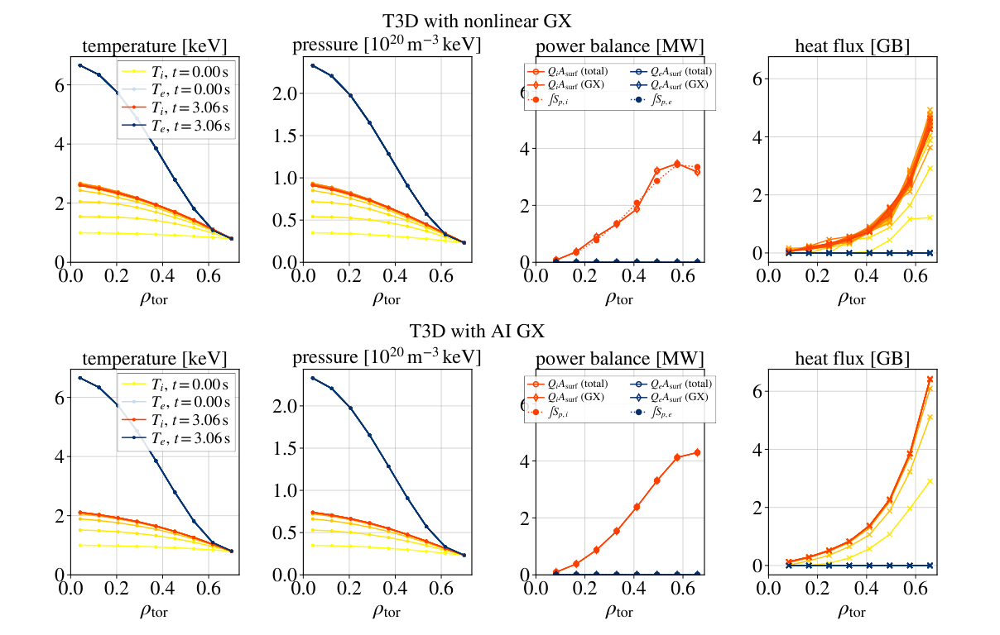
上排为 T3D+GX，下排为 T3D+AI；四列分别为温度（keV）、压力（图示单位 ）、功率平衡（MW）、热流（gyro-Bohm 单位）。各列横轴都是归一化径向坐标；图例比较初始与约 3.06 秒时刻的电子、离子量。温度与压力列展示离子升温、固定电子剖面；功率列比较热流乘磁面面积与积分源；末列显示最终离子热流相近。
正文指出 GX 初始热流低于 ，AI 却从约 开始；稳态最内点 AI 约低 10%。训练的 截底与低热流预测偏差有关，但不能把 0.1 直接说成算法硬编码下限。移除训练截底的尝试改善低通量、却牺牲其他区域表现，尚无完整替代基准。此图仅支持该测试的稳态近似一致，不证明通用瞬态可靠性。（PDF 17 页）
8. 算力账本与证据强弱
原文每次 Newton 迭代所需 GX 数量为 ，这里 是演化剖面种数；减一来自中点通量网格，加一来自剖面扰动估计导数。代入 和 31 次 Newton 迭代：
代理可批量评价空间点，GX 空间任务可并行但时间步相互依赖。此账本不含建立训练集、超参数搜索和训练 CNN 集成的前期成本，也未给出多次计时波动、编译预热和端到端 CPU 成本。（PDF 17–18 页）
可信之处：不只给代理内的改进，还用非线性 GX 检查优化后热流、临界梯度和温度，并公开最优候选失效案例。尚不能确认：对全新平衡族的泛化、网络导数正确性、集成不确定度的覆盖率、平均温度收益的统计稳健性、动力学电子/电磁与新经典效应加入后是否保留排名。本文未提供统一消融，将准对称权重、曲率罚项、采样点数、集成规模和搜索策略的独立贡献分开。
9. 附录 A/B 与表 1：复现时不能遗漏的设置
附录 A（PDF 22 页）记录让 Codex 生成自动搜索计划的自然语言提示，涉及目标/约束选择、Fourier continuation、单 GPU 优化和四 GPU 节点及 HTML 进度报告。它说明了实验如何组织，但由于 LLM 的非确定性，提示词本身不足以精确复现搜索轨迹。文件 AUTORESEARCH_GOAL.md 仅是论文引用的材料名，不是本任务指令。
附录 B 的表 1（PDF 23 页）逐项整理如下。这是外层搜索空间，与前面固定的临界梯度示例参数不同。
| 参数 | 搜索分布或候选 |
|---|---|
| Fourier continuation | |
| 对数均匀 | |
| 对数均匀 | |
| 对数均匀 | |
| 初始 trust radius | 对数均匀 |
| ftol、xtol、gtol | 对数均匀 |
| 或九点网格 | |
| 均匀 | |
| 扫描 | 上 12 点，或 上 20 点 |
| 对数均匀 | |
| 均匀 | |
| 场线聚合 | 最差场线值 |
复现缺口：精确初始平衡、权重与实现版本、模型权重与预处理、随机种子、有效候选清单、最优构型输出以及几何判废阈值，不能仅靠本文摘要设置完整恢复。文末给代码仓库和 Princeton Data Commons，但未列数据记录 DOI。（PDF 19 页）
10. 可以直接借鉴的设计
把“代理更快”用于更完整的目标。对象是多径向、多场线与多梯度采样，而不是仅替换一次 GX 调用。适合已有高保真数据且评价昂贵的优化任务；迁移时先对齐归一化，再增加覆盖，最后用独立高保真点复核。成本由单次推理增加到批量推理及少量 GPU 验证；若训练未覆盖新输入，增加采样也无法修复偏差。（依据 §3.1.1–3.1.3）
让最终输运量成为独立验收层。对象是“固定梯度目标 → 临界梯度 → 温度”的验证阶梯。先固定源项与边界条件做公平比较，再测试条件变化；资源需求是每个精选候选增加一次输运求解。若电子和密度响应会改变梯度结构，单离子温度验收仍可能失效。（依据 §3.1.3、3.2）
将几何拒绝和模型拒绝分开。先做嵌套磁面、坐标和曲率检查，再检查模型分歧与输入范围；不合格几何直接拒绝，合格但高不确定度才转交 GX。前者防止把根本无效的平衡送入昂贵模拟，后者处理代理知识不足。成本为几何检查和主动验证预算；集成一致犯错仍是失败模式。（依据图 8–10；步骤为报告建议）
11. 后续研究：可证伪的小实验
作者明确提出的方向（§4–5，PDF 18–19 页）包括：动理学电子扩展、分布外检测、多保真调用 GX、持续学习、直接输运目标与可微输运求解。文中“朴素扩展约两亿 node-hours”是对昂贵未来方案的量级估算，不是已经消耗的算力。以下实验是本报告提出的实施建议，未作新颖性声明。
优先一：先修复排序，再扩展搜索
假设：几何硬拒绝加不确定度门控能降低虚假优胜率，并在相同 GX 预算下提高最终有效温度收益。最小实验：从同一初始平衡、同一搜索空间出发，对比原评分、仅几何拒绝、几何加集成门控三组；每组多种子，事先固定候选数和 GX 调用预算。指标：非法候选进入精英比例、高保真与代理排名一致性、有效候选中心温度增益、GPU 时。成功标准：在预先约定的不确定性区间内，虚假优胜率显著下降且高保真最优收益不下降；若只是拒绝更多而没有改善验证排名，则假设不获支持。资源/风险：数十到数百次精选 GX 验证；阈值过严可能截断真实新构型，集成还需校准。
优先二：把“44%”变成对称的输运基准
假设：有效最优构型的增益在初始与优化两端都使用同分辨率 GX、增加场线采样后仍成立。最小实验：补齐初始平衡 GX 输运，逐步增加场线与平行分辨率，并分别加入新经典输运；保持加热、边界与密度一致。基线：论文单场线 AI 与 GX 设置。指标：中心及体积加权温度、能量平衡残差、网格/场线收敛误差。成功标准：收益超过数值误差与时间平均误差，并在更完整设置下保持正号；若收益被波纹代价抵消，则原结果仅适用于简化模型。资源/风险：数个完整输运求解，比点态验证昂贵；物理变化与分辨率变化须分步处理。
优先三：围绕阈值和低热流重新训练
假设：针对低热流与跨阈值位置设计损失，比单纯取消热流截底更能保持全范围性能。最小实验：同一组按平衡分组的训练/验证集，对比原截底、取消截底、分区加权损失；对阈值附近补少量 GX 数据。指标：临界梯度误差、低通量对数误差、高通量误差、输运瞬态与最终温度偏差，并比较网络导数与高保真差分趋势。成功标准：阈值和瞬态误差降低且高通量误差不超预设容限；若仅改善点态均方误差而输运不改善，则不支持目标。资源/风险：CNN 重训练加小批 GX，近阈值长时间平均可能是主成本；标签噪声会使导数验证不稳定。
12. 材料覆盖、来源与复核记录
依据用户提供的 2609.28730v1.pdf，23 页；正文 §1–5、致谢、数据声明、附录 A/B 已阅读，参考文献用于定位来源，未宣称逐篇追读。人工逐页检查确认图 1–12 全部收录，每图均保留全部面板并独立解释；附录无额外编号图，表 1 已逐项整理，无额外实质性未编号示意图。
原文版本：arXiv:2609.28730v1，2026-09-23 提交；访问核对日期 2026-09-25。论文作者：R. Michael Churchill、Matt Landreman、Jong Youl Choi、Byoungchan Jang、Rory Conlin、Noah Mandell、Anima Anandkumar、Valentin Duruisseaux、Jeffrey Larson、Dario Panici、Yigit Gunsur Elmacioglu、Jai Sachdev、Tony Qian。来源页面未列已发表期刊信息，本报告按预印本处理。
覆盖边界：未获得独立补充 PDF。论文所列 代码仓库 在本次公开 GitHub API 访问中返回 404，不能断定是不存在还是未公开；未取得代码、模型权重或完整运行数据。Princeton Data Commons 的具体记录未能定位，未做数值复现。PDF 全文阅读和图表覆盖已完成，不把这些状态扩写成“全部数据与代码已验证”。图 7 的小字受原始截图限制，图 10 多列缺少数值纵轴，相关讨论只使用可辨认趋势。
页面检查状态：图片裁剪已人工视觉核对，公式已严格预渲染；静态检查覆盖图片路径、字体依赖与导航锚点。内置浏览器的本地文件访问被安全策略阻止，未完成桌面、窄屏与打印布局的浏览器视觉验收，因此不将页面验收标为完整。
报告内论文事实均以章节、PDF 页码、公式或图表定位；“读者判断”“建议”与作者原始结论分开。全部新增公式保留 LaTeX 源并预渲染为离线 HTML/MathML；原图内容不改写。图清单见 figure-manifest.json。原图与论文权利归原作者，报告用于用户授权的阅读归档。